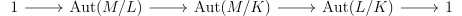

A ring is a monoid object in the category of abelian groups via the monoidal structure given by the tensor product \(\otimes \), the left adjoint of \(\Hom \). In other words, it is an abelian group \((R,+)\) with a bilinear multiplication operation \(*\) that is associative, and has an identity called \(1\). The category of rings is complete and cocomplete, its terminal object is the unique ring with \(1=0\), and is called the zero or trivial ring, and the initial object is the integers, \(\mathbb{Z}\). A property of rings is that \(0*a\) (often written \(0a\) for concision) is \(0\) for any \(a\).
The reason rings are important is quite similar to the reason groups are important. Groups arise naturally as the automorphisms of objects in a category, and similarly rings arise as the endomorphisms of objects in a preadditive category (i.e. one where the \(\Hom \)s are abelian groups and composition is bilinear). In other words, a ring is a one object preadditive category.
Thus it makes sense for a ring to “act” on a preadditive category. We call a functor from \(R\) to a preadditive category an \(R\)-module. If the category is unspecified, one usually assumes that it is the category of abelian groups, \(Ab\). If \(M\) is an \(R\)-module, \(m \in M, r \in R\), we write \(rm\) to mean the (bilinear) action of \(R\) on \(M\).
We will focus on commutative rings, as they are easier to understand than non-commutative rings. In fact, sometimes one even studies rings without \(1\), but we will again not think about this. From now on, commutative rings will be referred to as just rings.
Now for a commutative ring \(R\), analogously to the case of abelian groups, monoids in its category of modules are called \(R\)-algebras. For example, \(\ZZ \)-algebras are just rings, since \(\ZZ \)-modules are just abelian groups.
We can consider \(R\) to be an \(R\)-module in the natural way, the submodules of \(R\) are called ideals. In particular, these are nonempty subsets of \(R\) that are closed under multiplication by any element of \(R\) and under addition. Ideals are analogous to normal subgroups in that given a ring homomorphism \(R \to S\), the kernel is an ideal, and conversely given an ideal \(I\), we can form the quotient ring \(R/I\) by defining multiplication on cosets. Analogously to the case for groups, we have isomorphism theorems for rings. Note that we can write \((a,b,\dots )\) to mean the smallest ideal containing those elements, which we call the ideal generated by \(a,b,\dots \). Now a module is called Noetherian if every submodule is finitely generated, and a ring is called Noetherian if every ideal (submodule) is finitely generated.
One special kind of ideal \(\pp \) is called a prime ideal, which means that \(1 \notin \pp \), and if \(ab \in \pp \), then \(a \in \pp \) or \(b \in \pp \). An integral domain (sometimes just domain) is a nontrivial ring in which if \(ab = 0\), \(a=0\) or \(b = 0\), so we see that a prime ideal is exactly one where the quotient is an integral domain. Alternatively, an integral domain is a ring where \(0\) is a prime ideal. Yet another definition is a ring where there are no nonzero zero divisors, i.e. elements \(a\) such that \(ab = 0\), but \(b \neq 0\) for some \(b\). Note the nice property of prime ideals that the preimage of a prime ideal under a ring homomorphism is prime.
There is also the notion of a maximal ideal, which is an ideal \(I\subset R\) which is maximal in the poset of proper ideals, i.e those ideals not containing \(1\). By Zorn’s Lemma, maximal ideal always exist in nonzero rings. Analogously to prime ideals and integral domains, a field is a ring with two ideals. Equivalently it is a nonzero ring, where nonzero elements are units. Fields are then exactly the quotient of rings by a maximal ideal. In particular since units in a nonzero ring are not zero divisors, maximal ideals are prime.
There are many operations of ideals \(I,J\). For example, we can take meets \(I+J\) and joins \(I\cap J\), and products \(IJ\), which is the ideal generated by products of elements of \(I\) and \(J\). There is also the ideal quotient \((I:J) = \{r|rJ\subset I\}\).
It is always the case that \(IJ \subset I\cap J\), but they are not always equal. The following theorem gives a way to note when they are equal, and also realizes the quotient by an intersection as a pushout. It uses the notion of two ideals being comaximal, which means that their sum contains \(1\).
Proposition 1.1 (CRT). Suppose that \(I,J\subset R\) are ideals. Then \(R/(I\cap J)\) is the pullback of \(R/J\) and \(R/I\) along \(R/(I+J)\). If \(I,J\) are comaximal, \(IJ = (I+J)\), and \(R/IJ = R/I \times R/J\).
Proof. Given elements \([a],[b]\) in \(R/I, R/J\) that agree on \(R/(I+J)\), \(a = b + x+y\), with \(x,y \in I,J\) respectively. Then \(a-x=b+y\) is congruent mod \(I\) to a, and mod \(J\) to \(b\). Moreover, it is the unique such class mod \(I\cap J\), since if \(a-x'=b+y'\) were such a class, then \(x-x'=y-y' \equiv 0\) mod \(I\) and \(J\), and hence mod \(I\cap J\). Now if \(I,J\) are comaximal and \(a \in I\cap J\), then write \(1 = i+j \in I+J\), so that \(a = ai+aj\) is in \(IJ\). □
The reason it is called a prime ideal, is that there is a related notion of a prime element, which is an element that generates a prime ideal. Note we can use the notation \(a|b\) (”\(a\) divides \(b\)”) to mean \(b \in (a)\). A unit is an element that divides \(1\). The collection of units form a group under multiplication, denoted \(R^\times \) for the ring \(R\). Then a prime element is one where \(a|bc \implies a|c\) or \(a|b\). There is a related notion, called an irreducible element. A non-unit \(a\) is irreducible if \(bc|a\) means either \(b\) or \(c\) is a unit. We say that two elements are associates if they generate the same ideal, and that \(a\) is a proper divisor of \(b\) if \((a) \supsetneq (b)\). Note that many of these notions such as prime and irreducible make sense in arbitrary commutative monoids.
We would like to study the multiplicative structure of a ring, and in particular we would like to be able to tell when nonzero elements can be factorized into irreducibles.
Lemma 2.1. The set of zero divisors is closed under multiplication by any element of the ring, and the set of non zero divisors is closed under multiplication.
Proof. If \(a\) is a zero divisor let \(b\neq 0\) such that \(ab = 0\). Then for any \(r\), \((ar)b = 0\), so \(ar\) is a zero divisor. Now suppose that \(ab\) is a zero divisor. Then choose \(c \neq 0\) such that \(abc = 0\). If \(bc = 0\), then \(b\) is a zero divisor, but if not, then \(a\) is a zero divisor. □
The simplest way to understand the multiplicative structure of a ring \(R\) is to restrict to nonzero divisors (to avoid cases like \(2 \in \ZZ /6\ZZ \), for which \(2*4=2\)). We will call the monoid of nonzero divisors (in a nonzero ring) \(R_z\). Note that by the previous lemma, any factorization of elements in \(R_z\) remains entirely in \(R_z\).
Lemma 2.2. If \(a \in R_z\) and \((a) = (b)\) then \(a = ub\) for some unit. Moreover, if \(a = bc\), where \(b,c\) aren’t units, then \(b,c\) are proper divisors of \(a\).
Proof. If \((a) = (b)\), then \(a = cb, b = da\), so \((cd-1)a = 0 \implies cd = 1\), so \(c\) is a unit. Now if \(a = bc\) where \(b,c\) are not units, then \(b,c\) are not zero divisors as \(a\) isn’t. \((a) \supset (b)\), but were they equal, □
One way to get factorization into irreducibles is to require our ring be Noetherian. First, here are some conditions equivalent to being Noetherian.
Proposition 2.3. The following notions are equivalent for an \(R\)-module:
Proof. The first two are equivalent for any poset. The third implies the first since the union of an ascending chain of submodules is finitely generated, hence is contained in one of the elements of the chain. The first implies the third since given a submodule, we can construct a finite generating set by adding elements not already generated, and since this must stabilize, the submodule is finitely generated. □
Proposition 2.5. If \(R\) is Noetherian, every non-unit of \(R_z\) can be factored into irreducibles.
Proof. If not, choose a maximal proper \((a)\) such that \(a \in R_z\) doesn’t factor into irreducibles. Then \(a\) cannot be irreducible so \(a = bc\), where \(b,c \in R_z\) aren’t units. But then \((b),(c)\) are strictly larger ideals, so \(b,c\) can be factored into irreducibles, a contradiction. □
Sometimes what lets us have unique factorization is a division algorithm:
Definition 2.6. A Euclidean ring is a ring \(R\) with a function \(\rho :R\to W\) where \(W\) is well ordered, such that only \(0\) is sent to the minimal element, and if \(a,b \in R, b \neq 0\), then there is a \(q,r\) such that \(a = bq+r\) with \(\rho (r)<\rho (b)\).
Definition 2.7. A principle ideal ring (PIR) is one where all ideals are principle (i.e. generated by \(1\) element). In other words, it is a Noetherian Bezout ring.
Definition 2.8. We say that a commutative monoid \(M\) has unique factorization if \(M/M^\times \) is a free monoid. We say \(M\) has factorization if every element can be factored into irreducibles.
When there is unique factorization, greatest common divisors (gcd) and least common multiples (lcm) always exist between finite collections of elements of \(M/M^\times \).
Definition 2.9. A unique factorization ring (UFR) is a nonzero ring where \(R_z\) has unique factorization.
Proposition 2.10. \(\ZZ \) is a Euclidean domain.
Proof. \(\rho \) is the absolute value function. Then given \(a,b\), choose \(q\) to be the integer such that \(a-qb\) is the smallest non negative number since \(\NN \) is well ordered. □
Let \(K[x]\) denote the ring of polynomials with coefficients in \(K\) in the variable \(x\).
Proposition 2.11. \(K[x]\) where \(K\) is a field is a Euclidean domain.
Proof. \(\rho \) is the degree of a polynomial. Given two polynomials with \(ax^k,bx^l\) as the leading term, we can choose \(q\) to be \(\frac a b x^{k-l}\) if \(k\geq l\) and \(0\) otherwise. □
Proposition 2.12. Every Euclidean ring is a PIR.
Proof. First note that it is Noetherian, as given a set of generating elements \(A\), we can construct a finite set of generators \(a_i\) as follows: pick \(a'_i\) to be an element not generated by \(a_j, j<i\) if it exists, and then apply the property of \(\rho \) to \(a'_i\) and each of the \(a_j\) to create a \(a_i\) such that \(\rho (a_i)<\rho (a_j)\) for \(j<i\). Now since \(W\) is well ordered, some \(a_i\) must be \(0\), so the \(a_j,j<i\) generate the ideal.
Thus it suffices to show that \((a,b) = (c)\) for some \(c\). Indeed choosing \(c\) be a non zero element of \((a,b)\) with \(\rho (c)\) minimal works. □
Lemma 2.14. If \(M\) is a commutative monoid, \(M\) has unique factorization iff it has cancellation, factorization, and irreducibles are prime.
Proof. If \(M\) has unique factorization, it has clearly has cancellation and factorization, and if \(m\) is irreducible, and \(m|ab\), \(m\) is in the factorization of \(a\) or \(b\), so \(m|a\) or \(m|b\). Conversely, given two factorizations, any irreducible on one side must divide one on the other side, so they agree up to a unit. By cancellation and induction, the factorization is unique. □
Proposition 2.15. Every PIR is a UFR.
Proof. We can show that irreducibles in \(R_z\) are prime. Indeed, if \(a \in R_z\) is irreducible, and \(a|bc, b,c \in R_z\), \(a\nmid b\), then \((a,b) = (d)\), so \(dx = a\). Now \(x\) cannot be a unit so \(d\) must be, and \((a,b) = R\). Thus by the previous lemma we are done. □
In particular, since \(\ZZ \) is a PID the kernel of the unique map to any ring \(R\) is an ideal \((n)\), for some \(n\geq 0\), and \(n\) is called the characteristic of \(R\).
If \(R\) is a ring and \(X\) a set, \(R[X]\) is the set of polynomials with coefficients in \(R\) in the variables \(X\). This is the left adjoint to the forgetful functor from \(R\)-algebras to \(\Set \). Similarly we can construct the ring \(R[[X]]\) of formal power series. We’d like to say that \(R[X]\) is a UFR if \(R\) is, but to prove this we will need a simple case of a powerful technique called Localization.
Localized rings are in a sense dual to quotient rings, and both are examples of epis in the category of rings. Localization is essentially the universal process of formally adding inverses.
Given a multiplicative monoid \(M \subset R\), we can form the localization of \(R\) away from \(M\), denoted \(M^{-1}R\) as follows: The underlying set of \(M^{-1}R\) is \(R\times M\) (we can write \((r,m)\) as \(\frac r m\)) modded out by the equivalence relation \(\frac{r_1}{r_1} ~ \frac{r_2}{m_2}\) iff there is \(f \in M\) such that \(f(r_1m_2-r_2m_1) = 0\). Now it is easy to check this an equivalence relation, and we make \(M^{-1}R\) into a ring via \(\frac a b+\frac c d = \frac{ad+bc}{bd}\) and \(\frac a b \frac c d = \frac{ac}{bd}\). It is easy to check that these operations are well defined. Moreover there is a natural map \(R \to M^{-1}R\) sending \(r \mapsto \frac r 1\).
The localization is \(0\) iff \(1 =0\) in it iff \(0 \in M\). The map \(R \to M^{-1}R\) is injective iff \(M \subset R_z\) since \(\frac{a}{1} = \frac 0 1\) iff \(af = 0\) for some \(f \in M\), and \(f \in R_z \implies a = 0\).
The localized ring has the universal property any map sending \(M\) to units factors through \(M^{-1}R\). There are a few special instances of localization that deserve remark. First note that given a set \(S \subset R\), we can make sense of \(S^{-1}R\) as the localization away from the monoid generated by \(S\). If \(S\) has one element \(a\), we write the ring \(R_a\), the localization away from \(a\). If \(I\) is an ideal \(R-I\) is a monoid iff \(I\) is prime. Thus if \(\pp \) is a prime ideal, \(R_\pp = (R-\pp )^{-1}R\) is called the localization of \(R\) at \(\pp \). Finally if \(R\) is an integral domain, \(\Frac (R) = R_{(0)}\) is called the field of fractions. Indeed it is a field by the universal property, and since subrings of fields are integral domains, we see that integral domains are exactly those rings that are subrings of fields. For example, \(\Frac (\ZZ ) = \QQ \), \(\Frac (K[x]) = K(x)\), the field of rational functions (\(K\) is a field).
One can also localize modules. If \(N\) is an \(R\)-module, then \(M^{-1}N\) is the universal way of making \(N\) into a \(M^{-1}R\) module. Its underlying set is \(N \times M\) (once again written as a fraction) modded out by the equivalence relation \(\frac a b ~ \frac{c}{d}\) iff there is \(f \in M\) such that \(f(da-bc) = 0\). Addition is given by \(\frac a b + \frac c d = \frac{da+bc}{bd}\), and the action of \(M^{-1}R\) is given by \(\frac r m\frac a b = \frac{ra}{mb}\). There is a universal homomorphism \(N \to M^{-1}N\) given by \(n \mapsto \frac n 1\).
There is a correspondence of ideals for localized rings that is dual to quotients.
Definition 3.1. An ideal \(I\) in \(R\) is \(M\)-saturated if \(mr \in I\) implies \(r \in I\) for \(m \in M\).
Proposition 3.2. There is a natural isomorphism of lattices between ideals in \(M^{-1}R\) and \(M\)-saturated ideals in \(R\), sending an ideal in \(M^{-1}R\) to its preimage in \(R\). This isomorphism also gives a bijection between primes in \(M^{-1}R\) and primes in \(R\) not intersecting \(M\).
Proof. It is straightforward to verify that this isomorphism is as mentioned, and that primes correspond as mentioned which is easy to see since the preimage of primes are primes and primes not intersecting \(M\) are clearly \(M\)-saturated. □
This correspondence is the sense in which localization is dual to quotienting.
The name localization comes from algebraic geometry. We’d like to think of a ring as the ring of functions on some space. For example consider the ring of entire functions on \(\PP ^1\), \(\CC [x]\). We can now allow functions that are possibly meromorphic at the origin, giving \(\CC [x]_{x}\), so we have localized away from \(x\) (which corresponds to its zero set, the point \(0\)). Similarly, we can allow functions to be meromorphic everywhere except at the origin, in which case we get \(\CC [x]_{(x)}\), and we are localizing at the origin.
Now if we localize at a prime ideal \(\pp \), we get a local ring, one with a unique maximal ideal (in this case \(\pp \)).
Proof. It is clear that \((2)\) and \((1)\) are equivalent as well as \((3)\) and \((5)\) (for \((1) \implies (2)\) use existence of maximal ideals). Now \((2)\) implies \((4)\) as otherwise \(1 \in \mm \), and \((4)\) implies \((5)\) by taking a finite sum that is a unit, multiplying both sides by the inverse, and applying \((4)\) repeatedly. Finally \((3)\) implies \((2)\) by noting that the set of non units is an ideal. □
Another example of a local ring is the formal power series \(K[[x]]\), where \(K\) is a field, where the maximal ideal is \((x)\).
Add in things about ”local properties” for example a module is 0 iff localization at all prime/maximals is 0. An integral domain is the intersection of its localizations. A
Now let’s study polynomial algebras \(R[X]\). We can ask questions like when is it Noetherian or a UFR?
Lemma 4.1. If \(R[X]\) is nontrivial Noetherian, then \(R\) is too, and \(X\) is finite.
Proof. The ideals of \(R\) are a sublattice of those of \(R[X]\), so \(R\) is Noetherian. \(R\) is nontrivial since \(R[X]\) is, so if \(X\) is infinite, then let \(x_i\) be an infinite sequence in \(X\), so that \(\aa _i = (x_1,\dots ,x_i)\) is an infinite ascending chain of ideals. □
The converse is called the Hilbert Basis Theorem.
Proposition 4.2 (Hilbert). If \(R\) is a Noetherian ring and \(X\) a finite set, \(R[X]\) is Noetherian.
Proof. By induction it suffices to show \(R[x]\) is Noetherian. Now given an ideal \(I\) in \(R[x]\), consider the ideal of leading terms \(I_n\) of elements of \(I\) of \(n^{th}\) degree polynomials. Then \(I_n\) is an ascending chain of ideals, hence stabilizes. Up until \(n\) is the stabilization point, choosing finitely many polynomials generating \(I_n\) will generate \(I\). □
As for the second question, it is note true generally that \(R[x]\) is a UFR if \(R\) is. For example, in \(\ZZ /6\ZZ [x]\), \((x-1)x = (x+2)(x+3)\), but \(\ZZ /6\ZZ \) is a UFR. If we restrict to domains however, it is true. The key to proving this is that \(\Frac (R)[x]\) is a UFD, and this
To prove this, we can use Gauss’s Lemma. Note that given a nonzero polynomial in \(R[x]\), we can first remove all common factors in the coefficients so that the gcd of the coefficients is \(1\), which is called a primitive polynomial. Then we have the following:
Lemma 4.3 (Gauss). The product of primitive polynomials is primitive in \(R[x]\), where \(R\) is a UFD. Moreover, if \(0 \neq f = gh\) in \(\Frac (R)[x]\), then \(f = (cg)(c^{-1}h)\) in \(R[x]\), where either factor can be assumed to be primitive.
Proof. For the first statement, reduce mod every prime element \(p\), and note that the product of nonzero polynomials is nonzero. For the second, assume \(f\) is primitive by taking out common factors. Then, choose \(c,d \in R\) so that \(cg,dh\) are primitive. Then \((cg)(dh) = uf\) for some unit \(f\), so \(du^{-1} = c^{-1}\). □
Then we can prove:
Proposition 4.4. \(R[X]\) is a UFD iff \(R\) is.
Proof. Certainly \(R \subset R[X]\) shows that if \(R[X]\) is a UFD, \(R\) is, since factorization in \(R\) stay in \(R\). For the converse, since every element has only finitely many indeterminates, it suffices to prove this when \(X\) is finite, but then by induction it suffices to show that \(R[x]\) is a UFD. First note that \(p \in R\) remains prime in \(R[x]\). Moreover, we can factor nonzero elements of \(R[x]\) into irreducibles by first taking out common factors, and then using Gauss’s Lemma. Now primitive irreducibles \(p\) are prime since if \(p|ab\), WLOG, \(p|a\) in \(\Frac (R)[x]\) as it is a UFD. Then \(px = a\), but by Gauss’s lemma \(x \in R[x]\). By Lemma 2.14 we’re done. □
Noetherian rings are nice rings as we have already seen, and are quite common. Moreover, they are closed under quite a few operations:
Lemma 5.1. Noetherian rings are closed under localization and quotients.
Proof. This follows from the correspondence of ideals. □
Proposition 5.2. \(R\) is Noetherian iff \(R[[x]]\) is.
Proof. If \(R[[x]]\) is, certainly \(R\) is, as the ideals are a sublattice. For the converse, use the same proof as for \(R[x]\) except with the ideals \(J_n\) being the ideal of \(c\) occurring as first coefficients of power series in the \(x^n\) term □
Before proving the next proposition, here is another characterization of prime ideals. We say that \(a|b\) for ideals if \(a \supset b\).
Lemma 5.3. \(\pp \) is prime iff \(\pp |ab \implies \pp |a\) or \(\pp |b\) iff \(\pp |a\cap b \implies \pp |a\) or \(\pp |b\). In fact, \(\pp |ab \iff \pp |a\cap b\).
Proof. If \(\pp \) is prime, and \(\pp |ab\) or \(\pp |a\cap b\), but \(\pp \nmid a,\pp \nmid b\), choose \(x \in a-\pp ,y \in b-\pp \). Since \(xy \in \pp \), this is a contradiction. Conversely, if either of the latter two properties holds, then applying it to principle ideals shows that \(\pp \) is prime. The last statement follows. □
The following lemma gives an important use of the ideal quotient.
Lemma 5.4. If \((I:a)= (r_\alpha )\) and \(I+(a) = (s_\beta +j_\beta a)\) where \(s_\beta \in I, j_\beta \in J\), then \((r_\alpha a,s_\beta ) = I\).
Proof. By definition it is contained in \(I\). Now write \(c \in I\) as \(\sum c_i(s_i+j_ia)\). Then since \(c-\sum c_is_i \in J\), \(\sum c_i j_i \in (I:a)\). □
Corollary 5.5. \(R\) is Noetherian iff every prime ideal is finitely generated.
Proof. Suppose all prime ideals are finitely generated. Then suppose \(R\) were not Noetherian, and let \(I\) be a maximal counterexample. \(I\) is not prime, so \(ab \in I, a,b \notin I\) for some \(a,b\). Then the ideals \((I:a), I+(a)\) are strictly larger than \(I\) so are finitely generated. By the previous lemma, so is \(I\), a contradiction. □
Another nice property of Noetherian rings is they have only finitely many minimal primes, or prime ideals that are minimal in the poset of primes. Minimal primes exist by Zorn’s Lemma. To make the proof of this more motivated, we can introduce some notions from algebraic geometry. The Jacobson radical is the intersection of all the maximal ideals, and the nilradical is the intersection of all the prime ideals. We say a ring is reduced if the nilradical is trivial. We say that an ideal \(I\) is radical if \(x^k \in I \implies x \in I\). Note that reduced rings are exactly the quotients of rings by radical ideals.
Lemma 5.6. The nilradical consists of exactly the nilpotent elements.
Proof. If \(a\) is nilpotent, \(a^n = 0\) for some \(n\), and by induction, we see that \(a\) is in every prime. Conversely if \(a\) is not nilpotent, we can localize away from \(a\) to get a nontrivial ring. Then a maximal ideal of the localization corresponds to a prime ideal not containing \(a\). □
Corollary 5.7. Radical ideals are exactly the ideals that are the intersection of the prime ideals.
Proof. Look at the quotient and use our alternate characterization of the nilradical. □
Definition 5.8. The spectrum of \(R\) (denoted \(\Spec (R)\)) is the collection of prime ideals of \(R\) with the topology where the closed sets are of the form \(\{\pp \in \Spec |\pp \supset I\}\).
There is more structure that we can put but we will not need it now. Note that the maximal ideals are the closed points of \(\Spec (R)\). There is a correspondence between ideals and subsets of \(\Spec \). Given an ideal \(I\), we can consider \(Z(I)\), the set of primes containing \(I\), and conversely given a subset \(X \subset \Spec \), we can consider \(I(X)\), the intersection of all the primes it contains.
Definition 5.9. A closed subset \(X\) of a topological space is called irreducible if \(X = X_1 \cup X_2\) for \(X_i\) closed, then \(X = X_i\) for some \(i\).
The following lemma is a trivial version of Hilbert’s Nullstellensatz, that is much easier to prove since it is for arbitrary rings.
Lemma 5.10. \(I\) and \(Z\) are an adjunction between subsets of \(\Spec (R)\) and ideals of \(R\) that induces an equivalence between radical ideals and closed subsets of \(\Spec (R)\). In particular the unit is the closure and the counit is the radical of an ideal. Moreover prime ideals correspond to irreducible closed subsets.
Proof. Everything except the last statement follows from the previous corollary. The last statement follows from Lemma 5.3. □
A Noetherian ring has a Noetherian spectrum.
Proposition 5.12. A ring with Noetherian spectrum has finitely many minimal primes.
Proof. The nilradical is the intersection of all minimal primes, so it corresponds to a closed set that is the union of all minimal primes. Then we can decompose the nilradical into at most double the amount of closed sets until each component is prime. If this process doesn’t end after a finite number of steps, we have an infinite strictly descending sequence of closed sets. □
Add things about primary decomposition of an ideal
Given a homomorphism \(f: R \to S\), via composition \(R \to S \to End(O)\), every \(S\)-module structure on \(O\) induces an \(R\)-module structure. In particular, \(f\) gives a functor \(f^* :S\)-Mod\(\to R\)-Mod, and the map \(f\mapsto f^*\) is a functor from \(\Ring \to \Cat \). This is analogous to the functor \(\Grp \to \Cat \) for group actions.
Given an \(S\)-module \(N\), the tensor product with respect to \(N\) is the left adjoint of the functor \(f^*\Hom _S(N,-)\). In fact, we have an isomorphism \(\Hom _S(M\otimes _fN,P) \cong \Hom _R(M,f^*\Hom _S(N,P))\) that is natural in \(M,N,P\). If the map \(f\) is clear, it is also sometimes denoted \(M \otimes _SN\).
The tensor product also behaves nicely with respect to \(f\) in that is associative. More precisely, if we have \(R \xrightarrow{f} S \xrightarrow{g} T\), then we have the isomorphism \((M \otimes _f N)\otimes _gP \cong M \otimes _{g\circ f}(N\otimes _g P)\), which is coherent and natural in \(M,N,P\). Moreover, the tensor product preserves biproducts, meaning that there are natural isomorphisms \(M \otimes (N\oplus N') \cong (M \otimes N) \oplus (M \otimes N')\) and \((M\oplus M') \otimes N \cong (M \otimes N) \oplus (M' \otimes N)\).
Let’s construct the tensor product \(M \otimes _f N\) now. It will be a quotient of the module freely generated by elements denoted \(m\otimes n\), with \(m\in M,n \in N\). The relations will be \(rm\otimes n = m\otimes f(r)n\) for \(r \in R\), \(m\otimes n+m\otimes n' = m\otimes (n+n')\), \(m\otimes n+m'\otimes n = (m+m')\otimes n\). The action of \(S\) will be given by \(s(m\otimes n) = m\otimes sn\). Now given a map \(g:M\otimes _f N\to P\), the corresponding map \(g':M \to f^*Hom_S(N,P)\) is given by \(g'(m)(n) = g(m\otimes n)\).
It is worth mentioning a few special cases. We call \(M \otimes _f S\) the extension of scalars of \(M\) from \(R\) to \(S\) (via \(f\)). For example, if \(A\) is a monoid and \(I\) an ideal in \(R\), then there are natural isomorphisms \(M \otimes _{A^{-1}R} A^{-1}R \cong A^{-1}M\) and \(M \otimes _{R/I}R/I \cong M/IM\). Note also that extending a free module gives a free module. Finally another special case is when \(f\) is the identity. Then the tensor product, often written here \(\otimes _R\) or \(\otimes \), along with \(R\) as the identity, gives a symmetric monoidal structure to \(R\)-Mod (as mentioned before, \(R\)-algebras are monoids under this monoidal structure).
We would like to generalize the tensor product construction for two \(R\)-modules to a collection of modules over an arbitrary index set \(I\). To do this, we must realize that this special case is genuinely different from the general tensor product since it is symmetric. In particular, there is another way to phrase the universal property. Given \(R\)-modules, \(M,N\), we can say that a function \(M\times N \to P\) is bilinear if it is linear when only one of \(M\) or \(N\) varies. Then if Bilin\((M,N)\) is the functor taking \(P\) to the set of bilinear maps \(M \times N \to P\), Bilin\((M,N)\) is represented by \(M\otimes N\).
Rephrasing it this way makes it easy to generalize to arbitrary index sets. If \(I\) is an index set, let \(M_I\) be a set of modules indexed by \(I\), and say that a function \(\prod _I M_I \to P\) is I-multilinear if it is linear when only one index varies. If Multi\(_I(M_I)\) is the corresponding functor in this situation, then \(\bigotimes _IM_I\) is the representing object.
The construction of \(\bigotimes _IM_I\) is more or less the same as that of \(M_I\). Namely, consider the free module generated by elements of the form \(\bigotimes m_I\), and mod out by the same relations. Now given a multilinear map \(g\). send \(\bigotimes m_I\) to wherever \(g\) sends \((m_I)\).
There are other nice properties of infinite tensor products. For example, if \(A_I\) are sets indexed by \(I\), and \(M_{A_I}\) are indexed modules, then there is a natural isomorphism \(\bigotimes _I(\bigotimes _{A_I}M_{A_I}) \cong \bigotimes _{\coprod _I A_I} M_{A_I}\) (this is a general associativity). The reason natural makes sense is because tensor product is also functorial, since given \(M_I,N_I\), and maps \(g_i:M_i\to N_i\), then we get a map \(\bigotimes _IM_I \to \bigotimes _IN_I\), that is constructed by considering the multilinear map \((m_i) \mapsto \bigotimes g_i(m_i)\). Now we can try to construct the coproduct of \(R\)-algebras \(R_i, i \in I\).
The underlying \(R\)-module of \(\coprod _I R_I\) will be the submodule of \(\bigotimes _I R_I\) generated by simple tensors where all but finitely many of the entries are \(1\). The identity will be \(\bigotimes _I 1_I\), and multiplication will be the tensor product of multiplication on each \(R_I\). Concretely, that means that \((\bigotimes r_I)(\bigotimes s_I) = (\bigotimes r_Is_I)\). Associativity follows from the general associativity of the tensor product and the fact that multiplication in each \(R_i\) is associative. The inclusions \(R_i \to \coprod _I R_I\) are given by mapping every other coordinate to \(1\). Now given homomorphisms \(g_i:R_i \to S\), it is clear that if the homomorphisms factor through \(\coprod _I R_I\), the factorization is unique. Existence follows from seeing that the only possible homomorphism is indeed a homomorphism.
Whenever \(R\subset S\) are rings, we say \(S\) is an extension of \(R\) (sometimes written \(S/R\)). We would like to understand how the two rings of an extension relate to each other.
Definition 7.1. The height of a prime ideal \(\pp \) is the length of the maximal chain of ideals strictly contained in \(\pp \). The dimension of a ring is the supremum of the heights of all the primes.
Note that the height of a prime is the dimension of the localization at the prime.
Definition 7.2. Let \(S\) be an extension of \(R\). \(s \in S\) is called integral over \(R\) if it is the root of a monic polynomial with coefficients in \(R\). If \(R\) is a field, we can also call \(s\) algebraic. We say \(S\) is integral or algebraic over \(R\) if every element of it is.
Proof. For \(1 \implies 2\) note that \(R[s]\) is generated as an \(R\) module by finitely many powers of \(s\). For \(2 \implies 1\) multiplication by \(s\) is an endomorphism, by the determinant trick, multiplication by some polynomial of \(s\) is identically \(0\), but then \(s\) is a root of that polynomial. □
Corollary 7.4. The elements of \(S\) integral over \(R\) form a ring, and if \(R\) is a field, they form a field. Finally, integrality is transitive.
Proof. For the first statement, note that \(R[s,t]\) is finitely generated as an \(R\)-module if \(s,t\) are integral, so that \(s+t,st\) are integral. If \(R\) is a field and \(s\neq 0\) satisfies the polynomial \(a_nx^n+\dots +a_1x + a_0\), \(s^{-1}\) satisfies \(a_0x^n+\dots + a_{n-1}x+a_n = 0\). Transitivity follows from the fact that if \(R\subset S \subset T\), and \(t_i\) are generators of \(T\) as an \(S\)-module, and \(s_i\) are generators of \(S\) as an \(R\)-module, then \(t_is_j\) are generators of \(T\) as an \(R\)-module. □
Thus we can make sense of the integral closure of \(R\) in \(S\) (denoted \(I_S(R)\)), namely the subring of integral elements. We say that \(R\) is integrally closed in \(S\) if it is its integral closure. If \(S\) is unspecified, and \(R\) a domain, we assume that \(S = \Frac (R)\).
There is an easy way to tell if an element is integral over an integrally closed domain.
Definition 7.5. The minimal polynomial of an element \(s\) algebraic over a field \(F\) is the unique monic generator of the ideal of \(F[x]\) for which \(s\) is a root.
Lemma 7.6. \(s\) is integral over a domain \(R\) iff \(s\) is algebraic over \(\Frac (R)\) and its minimal polynomial has coefficients in \(I(R)\).
Proof. If \(s\) is integral, it is algebraic. Now consider the minimal polynomial \(g\) of \(s\) over \(R\). If it is degree \(n\), then \(\Frac (R)[s]\) is an \(n\) dimensional \(\Frac [R]\) vector space, with basis \(1,s,\dots ,s^{n-1}\). Multiplication by \(s\) is an endomorphism whose matrix in this basis consists of elements integral. Then the characteristic polynomial of this is the minimal polynomial, and has integral coefficients. The converse is obvious. □
Lemma 7.7. UFDs are integrally closed.
Proof. Suppose \(x^n+\dots +a_0 \in R[x]\) has a root in \(\Frac (R)\), where \(R\) is a UFD. WLOG assume \(a_0 \neq 0\), and suppose the root is \(\frac{a}{b}\) with \(\gcd (a,b) = 1\). Then \(-a_0 = (\frac{a}{b})^n+\dots +a_1\frac a b\) has a \(b\) in the denominator, so \(b = 1\). □
Integral extensions behave nicely with respect to prime ideals.
Definition 7.8. If \(R\subset S\) is an extension, \(\pp \subset R\), \(\qq \subset S\) prime ideals, we say \(\qq \) lies above \(\pp \) if \(\qq \cap R = \pp \).
We can also write \(S_\pp \) to denote \((R-\pp )^{-1}S\).
Lemma 7.9. If \(S/R\) is an integral extension of a local ring and \(\aa \) is a proper ideal of \(R\), \(\aa S\) is a proper ideal of \(S\).
Proof. If \(1 \in \aa S\), write \(1 = \sum _1^n a_is_i\), \(a_i \in \aa , s_i \in S\). By Nakayama’s Lemma, it follows that \(R[s_i]=0\), a contradiction. □
Proposition 7.10 (Lying over). If \(R \subset S\) is an integral extension, then every prime \(\pp \) of \(R\) is of the form \(\qq \cap R\) for some prime \(\qq \subset Q\).
Proof. Note that \(S_{\pp }\) is an integral extension of \(R_{\pp }\), so that by Lemma 7.9 \(\pp S_{\pp }\) is a proper ideal of \(S_{\pp }\). Thus it is contained in a maximal ideal \(\qq S_\pp \), and \(\qq \cap R\) must be \(\pp \). □
Proposition 7.11 (Going up). If \(R \subset S\) is an integral extension, \(\pp _1\subsetneq \pp _2\subset R\) primes, and \(\qq _1 \subset R\) lies above \(S\), then there is a \(\qq _1 \subsetneq \qq _2\) such that \(\qq _2\) lies above \(\pp _2\).
Proof. Apply the previous proposition to \(\qq _2\), \(R/{\pp _1}\), and \(S/{\qq _1}\). □
Proposition 7.12 (Incomparability). If \(S/R\) is an integral extension, and \(\qq _1\subsetneq \qq _2\) are two primes in \(S\), then \(\qq _1 \cap R \subsetneq \qq _2 \cap R\).
Proof. Consider the extension \(S/\qq _1\) over \(R/\qq _1\cap R\). \(\qq _2/\qq _1\) is a nonzero ideal, so if \(0 \neq a \in \qq _2/\qq _1\) is a nonzero element that is the root of monic polynomial \(g\), we can assume \(g\) has nonzero constant term \(c\). Then \(0 \neq -c = (g-c)(a) \in \qq _2\cap R/\qq _1\cap R\), so \(\qq _2 \cap R \subsetneq \qq _1 \cap R\). □
Corollary 7.13. Integral extensions preserve dimension.
Proof. This follows from lying over, going up, and incomparability. □
The next nice property of integral extensions only holds for integrally closed rings.
Lemma 7.14. A localization \(M^{-1}R\) of an integrally closed domain \(R\) is an integrally closed domain.
Proof. WLOG, \(M^{-1}R\) is nontrivial, i.e. \(0 \notin M\). Then \(\Frac (R) = \Frac (M^{-1}R)\). Now suppose \(x \in \Frac (M^{-1}R)\) is integral over □
Proposition 7.15 (Going down). Let \(S/R\) be an integral extension, \(S\) a domain, and \(R\) integrally closed. Then if \(\pp _1 \subsetneq \pp _2\) are primes and \(\qq _2\) lies above \(\pp _2\), then there is a \(\qq _1 \subsetneq \qq _2\) lying above \(\pp _1\).
Proof. □
Definition 8.1. An ordered abelian group is an abelian group \(\Gamma \) with a total ordering \(\leq \) that is translation invariant: \(a\leq b \iff a+x \leq b+x\).
Lemma 8.2. An ordered abelian group is determined by a collection of positive elements closed under addition that have trichotomy: every element is either positive, negative, or \(0\).
Proof. Given an ordered abelian group, the positive elements certainly are closed under addition, and satisfy trichotomy. Conversely, we can define \(a \geq b \iff a-b \geq 0\). Transitivity is equivalent to being closed under addition, totality is equivalent to trichotomy. □
Lemma 8.3. An abelian group can be ordered iff it is nontorsion.
Proof. If it is ordered, there can be no torsion elements, as if \(a\) is torsion, WLOG, \(a \geq 0\), but since \(na = 0\), and \(a \leq 2a \dots \leq na\), \(a = 0\). Conversely, given a nontorsion abelian group \(G\), consider the poset of total orders on subgroups of \(G\) via restriction, and by Zorn’s Lemma there is a maximal element. This maximal element must be defined on the whole of \(G\). If not, suppose it is defined on \(H\) and \(a \notin H\). Then either \(na \in H\) for some \(n>0\) or \(H\langle a\rangle = H \times \langle a\rangle \). In the latter case, we can define the positive elements of \(H\langle a \rangle \) to be the positive elements of \(H\) along with those where the \(a\) component is non-negative. In the former case, define \(x\) to be positive in \(H\langle a \rangle \) iff \(nx\) is in \(H\). □
Definition 8.4. A complete ordered abelian group is one where any set of positive elements has an infimum.
The forgetful functor from complete ordered abelian groups to ordered abelian groups has a left adjoint, the Dedekind completion. To construct it for a given \(G\), call a subset \(I \subset G\) a Dedekind cut if it is bounded below, and \(a \in I, a\leq b \implies b \in I\). We can turn the collection of Dedekind cuts into an ordered abelian group having \(I+J\) be the set of elements that are sums of elements in \(I\) and \(J\). The inverse of \(I\) is \(\{x|x+I \geq 0\}\). The inclusion \(g \mapsto \{x|x\geq g\}\) is the universal map, and the infimum is given by the union.
Lemma 8.5. A well ordered abelian group is either trivial or \(\ZZ \).
Proof. If it is nontrivial, let \(a\) be a positive element. WLOG, we can assume that for \(n \in \NN \), there is no \(x\) such that \(nx = a\), as otherwise choose \(a = x\). If we could do this process infinitely many times, than there would be an infinite subset \(X\) of \(\NN \) such that \(\frac a n, n \in X\) is in the abelian group, but then this set would have no minimum. Now If \(\langle a \rangle \) is not everything, then suppose \(b\) is another positive element. \(\langle a,b\rangle = \ZZ ^2\). WLOG we can assume \((1,-1)\) is positive. But then the positive elements of the form \((a,x), a>0\) and \((0,x),x>0\), which is not a well ordering. □
Definition 8.6. A valuation ring is an integral domain \(R\) with a valuation: a surjective homomorphism \(\nu :\Frac (R)^\times \to \Gamma \), where \(\Gamma \) is an ordered abelian group such that \(R\) is preimage of the non-negative elements.
Note that in a valuation ring, \(a|b\) iff \(\nu (a) \leq \nu (b)\). In particular, two nonzero elements are associates iff they have the same valuation, and so units of \(R\) are those with valuation \(0\).
Proof. \(1 \implies 3\) since ideals correspond to Dedekind cuts of \(\Gamma \) via the valuation. Note that principle ideals correspond to elements of \(\Gamma \) in the completion. \(3 \implies 2\) as if \(a,b \in R\), then \((a)\subset (b)\) or \((b) \subset (a)\) so that \(\frac a b\) or \(\frac b a \in R\). \(2 \implies 1\), as the projection to \(\Frac (R)^\times /R^\times \) is a valuation, where the non-negative elements are the image of \(R_z\). □
Note as a consequence that \(\nu (a+b) \geq \min (\nu (a),\nu (b))\) if \(a,b,a+b \neq 0\), and that the valuation is essentially unique.
Corollary 8.8. A valuation ring is an integrally closed local Bezout domain of dimension at most \(1\).
Proof. There can only be one maximal ideal as the ideals are totally ordered, and since finite sets have minima it is Bezout by the remark in the previous proof. If \(0 \neq x \in \Frac (R)\) is integral over \(R\), WLOG the polynomial it is a root of has a nonzero constant term. Then that polynomial times □
valuation rings are ”maximal”.
If the valuation ring \(R\) is Noetherian, then the set of positive elements must be well ordered, as given a set of positive elements, the generator of the ideal they generate is principle, so any set of positive elements has a lower bound contained in the set. Thus either the valuation is trivial, in which case the ring is a field, or its image is \(\ZZ \), in which case we say \(R\) is a discrete valuation ring or DVR.
Often we don’t have unique factorization of elements in our ring. For example, the classic example is \(\ZZ [\sqrt{-5}]\), where \((1+\sqrt{-5})*(1-\sqrt{5}) = 2*3\), but in this case, and many others, we have the next nicest thing: unique factorization of ideals.
Fields are simple objects in the category of rings. Since they are integral domains, their characteristic is either a prime \(p\) or \(0\). Much of the way we study fields relies on the fact that their module theory is very simple, in particular, all modules are free. Moreover, any morphism of fields is injective since the kernels are proper ideals. Thus our basic notion is that of a field extension \(L/F\), which is just an inclusion \(F \hookrightarrow L\). In particular, the field \(L\) becomes a \(F\)-vector space, so has a dimension which we call the degree of the extension, denoted \([L:F]\). Note that by Lemma 7.3 a finite degree extension (which we can just call finite) is algebraic. We will start by studying algebraic extensions, mostly finite ones.
Lemma 11.1. If \(M/L/K\) are two extensions of fields, then \([M:K] = [M:L][L:K]\).
Proof. Take a basis of \(L/K\), and a basis of \(M/L\), and the product of the two sets will be a basis of \(M/K\). □
We say that an extension \(L/K\) is simple if it is generated over \(K\) by one element, \(\alpha \), which we call the primitive element. The degree of \(\alpha \) is then \([L:K] = [K(\alpha ):K]\).
Lemma 11.2. The degree of an element divides the degree of the field extension.
Proof. Apply Lemma 11.1 to the fact that we have the extensions \(L/K(\alpha )/K\). □
Definition 11.3. The characteristic polynomial \(\chi _L(\alpha )\) of an element \(\alpha \) of a finite extension \(L/K\) is the characteristic polynomial of multiplication by that element as a \(K\)-linear map.
Lemma 11.4. The degree of \(\alpha \) is the degree of its minimal polynomial \(\mu _K(\alpha )\).
Proof. Just note that the span of \(1,\alpha ,\dots , \alpha ^{\deg (\alpha )-1}\) form a field containing \(a\), giving one inequality, and the other inequality comes from applying the Cayley-Hamilton Theorem to \(\chi _L(\alpha )\). □
We already have enough to prove an interesting fact:
Theorem 11.5 (Lüroth). A subfield of \(K(t)\) strictly containing \(K\) is isomorphic to \(K(t)\).
Proof. If \(K(t)/L/K\) are extensions, with \(L \neq K\), \(L\) contains some rational function \(f/g\), where \(f,g\) are relatively prime. \(g(t)f/g-f(t)\) then shows that \(K(t)\) is a simple finite extension of \(L\), and its degree is \(\min _{f/g \in L}(\max (\deg f,\deg g))\). Then a minimizing \(f/g\) and using Lemma 11.1, \(L = K(f/g)\). □
Corollary 11.6. \(\chi _L(\alpha ) = \mu _L(\alpha )^{\frac{[L:K]}{\deg{\alpha }}}\).
Proof. This follows from doing the proof of Lemma \(\ref{degreemult}\) on \(L/K(\alpha )/K\). □
Definition 11.7. A field is algebraically closed if there are no proper algebraic field extensions. An algebraic extension is called the algebraic closure if it is algebraically closed.
Lemma 11.8. A field is algebraically closed iff any polynomial factors into linear terms.
Proof. This is immediate, since nonlinear irreducibles \(f\) correspond to simple nontrivial extensions via \(K[x]/(f(x))\). □
We use \(\bar{K}\) to denote the algebraic closure of \(K\). The algebraic closure behaves similarly to the ”universal cover” of a space. In particular, we would like every algebraic extension to be describable in terms of an algebraic closure.
Lemma 11.9 (Embedding Lemma). If \(L/K\) is an algebraic extension and \(\bar{K}/K\) is an algebraic closure, then there is an embedding of \(K\)-algebras \(L \hookrightarrow \bar{K}\).
Proof. Consider the poset of embeddings of subfields use Zorn’s Lemma to choose a maximal one, and note that we can always embed a simple extension, so that the maximal element is everywhere defined. □
Corollary 11.10 (Extending Lemma). Any automorphism of \(K\) extends to one of \(\bar{K}\).
Proof. Apply the embedding lemma, and note that the embedding must be an isomorphism as \(\bar{K}\) is algebraically closed. □
Proposition 11.11. Algebraic closures exist and are unique up to isomorphism.
Proof. Given a field \(F\), write \(F = F_0\). Now inductively given \(F_i\) produce a field \(F_{i+1}\) by adjoining an element \(g_\alpha \) to \(F_i\) for each irreducible polynomial \(f_\alpha \) over \(F_i\), and modding out by a maximal ideal containing \(f_\alpha (g_\alpha )\). Then the union of the \(F_i\) is algebraically closed. For uniqueness, given \(M,L\), two algebraic closures of \(K\), By the embedding lemma \(L\) embeds into \(M\), but this embedding is an isomorphism as \(L\) is algebraically closed. □
Note that fields don’t have many limits, but if we consider the category of fields embedded in some fixed algebraic closure, then we get a lattice, which does have limits and colimits. The product of some fields \(F_i\) is then their intersection, and the coproduct is called their compositum.
Note that there might be a lot of embeddings \(L/K \to \bar{K}/K\). In fact, there generally are a lot. We say that the separable degree of an extension \(L/K\) (written \([L:K]_s\)) is the number of embeddings of \(L\) into \(\bar{K}\), which is well defined by the previous proposition. A finite extension is separable if its separable degree equals its degree, and a general algebraic extension is separable if every finite subextension is separable, and an element is separable if the corresponding simple extension is. The next two lemmas imply that these notions of separable agree.
Lemma 12.1. For \(M/L/K\), \([M:L]_s[L:K]_s = [M:K]_s\).
Proof. Just note that \(\bar{L} = \bar{K}\), and that extending an embedding from \(K\) to \(L\) and then to \(M\) is the same as extending from \(K\) to \(M\). □
Lemma 12.2. \([M:L]_s|[M:L]\) for a finite extension.
Proof. By multiplicativity, one reduces to the case of a simple extension, where this follows from the fact that if the minimal polynomial of \(\alpha \) factors in the algebraic closure as \(\Pi _i(x-\alpha _i)^b_i\), the \(b_i\) had better agree, since automorphisms of the simple extension can extend to the algebraic closure, and they fix the minimal polynomial. □
This lemma shows that the following notion is useful. A polynomial of degree \(n\) over a field \(F\) is called separable if it has \(n\) roots in the algebraic closure. Additionally, elements with the same minimal polynomial are called conjugate. The proof of the previous lemma gives the following:
Lemma 12.3. Every element of a separable extension has a separable minimal polynomial, and adjoining roots of separable polynomials gives separable extensions.
Corollary 12.4. Given \(M/L/K\), \(M/K\) is separable iff \(M/L\) and \(L/K\) are separable. The compositum of separable extensions is separable.
Proof. The first statement follows from the finite case, which follows from multiplicativity. The second statement follows from the finite case, which follows from the fact that separable polynomials are still separable in extensions. □
Lemma 12.5. TFAE for an irreducible polynomial \(f\) over \(K\) (the first two are equivalent for arbitrary \(f\)):
Proof. \(f\) is separable iff \(f\) has no double roots in the algebraic closure iff \(f,f'\) are coprime. It is clear that it is equivalent for \(f,f'\) to be coprime and \(f' \neq 0\) by degree considerations and the fact that \(f\) is irreducible. □
Note that \(f' = 0\) happens for irreducible \(f\) iff we are in char \(p\) or \(f\) is a polynomial of \(x^p\).
Now by the basic properties of separable extensions, it follows that given an extension \(L/K\), there is a maximal separable subextension, consisting of the elements separable over \(K\). We call this the separable closure of \(K\) in \(L\). The separable closure of \(K\) in \(\bar{K}\) is just called the separable closure, denoted \(K^{\sep }\). It is the maximal separable extension of \(K\), since any separable extension embeds in \(\bar{K}\), but must land in \(K^{\sep }\). Note that in characteristic \(0\), these are identical extensions.
Complementary to separable extensions are purely inseparable extensions, which are algebraic extensions where every finite subextension has separability degree \(1\). We have seen that every extension \(L/K\) splits into \(L/L\cap K^{\sep }/K\). The extension \(L/L\cap K^{\sep }\) is purely inseparable. To see this, note it suffices to show this when \(L/L\cap K^{\sep }\) is simple, and if \(\alpha \) is a primitive element with minimal polynomial \(f(x^{p^k})\) with \(k\) maximal, then \(\alpha ^{p^k}\) is separable so is in \(L\cap K^{\sep }\). Thus \(f = x^{p^k}-\alpha ^{p^k}\), and since there are no nontrivial \(p^k\) roots of unity in characteristic \(p\), there is only one root of \(f\). In fact we get the following equivalent characterization of purely inseparable extensions:
Proposition 12.6. An extension of char \(p\) fields \(L/K\) is purely inseparable iff \(x^{p^k} \in K\) for all \(x \in L\), and some \(k\).
In most cases we want to deal with separable extensions, which are considered nice. Hence the following definition
A ring of characteristic \(p\) has an endomorphism called the Frobenius endomorphism, \(Fr\), sending \(x \mapsto x^p\). By the binomial theorem, this is indeed a ring homomorphism, and if the ring is reduced, it is injective.
Proposition 12.8. The perfect fields are exactly those where \(Fr\) is surjective and those of characteristic \(0\).
Proof. This follows from our characterization of purely inseparable extensions. □
We can ask the question ”when is a finite extension simple?” It is not true in general. For example, consider \(L = \FF _p(t^{\frac{1}{p}},{u}^{\frac{1}{p}})/\FF _p(t,u) = K\), a degree \(p^2\) purely inseparable extension. If this were simple, it would be generated by an element whose \(p^{th}\) power was not in \(K\), but this is true of every element of \(L\).
Lemma 12.9. The group of automorphisms of \(\bar{K}\) fixing \(K\) act transitively on the conjugates of each element.
Proof. This follows from the embedding lemma. □
Corollary 12.10. The conjugates of \(f(\alpha _i)\) over \(K\) where \(f\) is a polynomial in the \(\alpha _i\) are of the form \(f(\beta _i)\), where \(\beta _i\) is a conjugate of \(\alpha _i\).
Proof. This follows from the previous lemma. □
Lemma 12.11. The degree of an automorphism of \(L\) fixing a finite index subfield \(K\) divides \([L:K]_s\)
Proof. Note that an automorphism is determined by its action \(L\), which sends elements to their conjugates. □
Proposition 12.12. If \(L/K\) is a finite separable extension, then \(L\) is simple.
Proof. We may as well assume \(K\) is infinite, as if it is finite we can assume \(K = \FF _p\) and since the order of \(Fr\) divides the degree over \(\FF _p\) by the previous lemma, every element is the root of \(x^{p^k}-x\). Now since there can be at most \(p^l\) roots to \(x^{p^l}-x\) for each \(l\), so the multiplicative group must by cyclic, and any generator is a primitive element.
If \(K\) is infinite, then it suffices by induction to show that \(K(a,b) = K(c)\) if \(a,b\) are separable. Consider elements of the form \(a+kb, k \in K\). We can consider the subset of \(k \in K\) such that the characteristic polynomial of \(a+kb\) is irreducible. Let \(a_i, b_i\) be the conjugates of \(a,b\) respectively, which we can assume are distinct. Now the things of the form \(a_j+kb_i\) are all conjugates, so if they are all distinct, then \(a_j+kb_i\) is primitive. Now setting two of these equal gives the equation \(k = \frac{a_i-a_j}{b_i-b_j}\), so there are finitely many values of \(k\) that are bad. □
This proof secretly uses some Galois theory, and we will see another one later. This one is useful for computations.
We would like to understand the automorphisms of a field extension \(L/K\), namely the automorphisms of \(L\) as a \(K\)-algebra, which we denote \(\Aut (L/K)\). Sometimes these don’t exist, as in the case of \(\QQ (2^{\frac{1}{3}})/\QQ \), but other times they do, such as in the case of \(\QQ (\sqrt{a})/\QQ \). When we try to see why this property doesn’t hold for \(\QQ (2^{\frac{1}{3}})\), we see it is because the conjugates of \(2^{\frac{1}{3}}\) are not contained in the field.
Definition 13.1. We say a polynomial over \(K\) splits in an extension \(L\) if it factors in \(L\) into linear terms.
Definition 13.2. An algebraic extension \(L/K\) is normal if every irreducible polynomial over \(K\) that has a root in \(L\) splits.
Definition 13.3. We call the splitting field of a collection of polynomials \(f \in K[x]\) the smallest normal field extension containing a root of \(f\).
Definition 13.4. We say that two embedded algebraic extensions \(L/K,\tilde{L}\) are conjugate if there is an automorphism in \(\Aut (\bar{K}/K)\) taking \(L\) to \(\bar{L}\).
From the extension lemma it follows that two extensions are isomorphic iff they are conjugate.
Proof. The first two are clearly equivalent since roots correspond to points in the algebraic closure. If all the conjugates are in \(L\), since automorphisms of \(\bar{K}/K\) send conjugates to conjugates, they fix \(L\). The inverse also fixes \(L\), so it restricts to an automorphism of \(L\). If every automorphism sends \(L/K\) to itself, then by the extension lemma, \(L\) is normal. A normal extension is the splitting field of the minimal polynomials of all its elements, and a splitting field is by definition normal. The last statement is clearly equivalent to the third. □
Corollary 13.6 (Extension Lemma). If \(L/K\) is normal, any automorphism of \(K\) extends to one of \(L\).
Proof. It extends to the algebraic closure, and then restricts to \(L\). □
Note that since \(Aut(\bar{K}/K)\) acts transitively on conjugates and restricts to automorphism of any normal extension, normal extensions act transitively on the conjugates. Also note that purely inseparable extensions are normal.
Corollary 13.7. Splitting fields are unique up to isomorphism.
Proof. They can embed into the Galois closure in one way. □
The algebraic closure is the splitting field of every polynomial, and the separable closure is the splitting field of every separable polynomial.
Corollary 13.8. If \(M/L/K\) are extensions, \(M/K\) is normal implies \(M/L\) is normal. The compositum and intersection of normal extensions is normal.
Proof. The first statement is obvious from the third equivalent version of normal. The statement about composita follows from Lemma 12.10, and the one about intersections is obvious. □
Definition 13.9. The normal closure of an extension \(L/K\) is the smallest normal extension of \(K\) containing \(K\)
By Corollary 12.10 it is obtained by adjoining the conjugates of generating elements of the extension. In particular, the normal closure of a finite extension is finite.
Corollary 14.2. The composita and intersections of Galois extensions is Galois. If \(M/L/K\) are extensions, and \(M/K\) is Galois, \(M/L\) is Galois.
Proof. The corresponding properties hold for normal and separable extensions. □
For a Galois extension we write \(\Gal (L/K)\) for \(\Aut (L/K)\), and call it the Galois group. The normal closure for a separable extension is called the Galois closure.
For a subgroup \(H \subset \Aut (L/K)\), we let \(L^H\), denote the fixed field, or the subfield fixed by \(H\).
Proposition 14.3. TFAE for a finite extension (the first three are equivalent in general):
Proof. The first two are clearly equivalent. The third is implied by the first since the Galois group acts transitively on the conjugates and every element not in \(K\) has more than one conjugate iff the extension is separable. Conversely, if \(L^{\Aut (L/K)} = K\), for any \(\alpha \in L\) where \(\alpha _i\) are its conjugates in \(L\), the polynomial \(\Pi _i(t-\alpha _i)\) is \(\Aut (L/K)\)-invariant, so has coefficients in \(K\), so \(\alpha \) is separable and all its conjugates are in \(L\). For the fourth, pick a primitive element, and note that the Galois group acts simply and transitively on its conjugates. For the converse, we can assume \(L\) is separable, since the automorphism group of an extension is a subgroup of the automorphism group of the separable part. The automorphism group acts on the conjugates of a primitive element simply, so if there are \([L:K]\) automorphisms, the extension is normal. □
If \(M/L/K\) are normal extensions, there is a map \(\Aut (M/K) \to \Aut (L/K)\) given by restriction, which is surjective by the extension lemma. We get the exact sequence:

We can endow \(\Aut (M/K)\) with the profinite topology, where we view it as the limit of all the finite normal intermediate extensions. If the extension is finite this is the discrete topology. The Galois group of the algebraic closure with this topology is called the absolute Galois group of the field.
We can slightly strengthen the statement of \((3)\) in the previous proposition. This is the key to Galois Theory.
Lemma 14.4. If \(L/K\) is a finite Galois extension, and \(H\) is a subgroup of \(\Gal (L/K)\), then \([\Gal (L/K):H] = [L^H:K]\).
Proof. Choose a primitive element \(\alpha \) of \(L/L^H\), and consider \(\Pi _i(t-\alpha _i)\) as before where the product is over the \(H\)-conjugates of \(\alpha \). This polynomial has coefficients in \(L^H\), so is the minimal polynomial of \(\alpha \). \(H\) acts simply so we get the equality. □
Theorem 14.5 (Fundamental Theorem of Galois Theory). Let \(M/K\) be a Galois extension. Then, there is a correspondence between closed subgroups of \(\Gal (M/K)\) and intermediate extensions given by taking the fixed field, and taking the Galois group over the intermediate extension. The degree of the extension matches the index of the subgroup. This is a bijection, and restricts to a bijective correspondence between normal intermediate extensions and normal closed subgroups.
Proof. First assume our extension is finite.
For a subset \(H \subset \Gal (M/K)\) we can ask which elements of \(\Gal (M/K)\) fix \(M^H\). Certainly the subgroup generated by \(H\) does, and the previous results give \([\Gal (M/K):H] = [M^H:K] = [M:K]/[M:M^H] = [\Gal (M/K):\Gal (M^H/K)]\), so \(H = \Gal (M^H/K)\). Conversely, given an intermediate extension, by the extension lemma it is the fixed field of the automorphisms that fix it.
In this correspondence, our subgroup \(H\) is normal iff for an automorphism \(\tau \) that fixes \(M^H\), and \(\sigma \) that fixes \(K\), \(\tau \sigma M^H = \sigma M^H\) iff automorphisms fixing \(M^H/H\) fix every conjugate of \(M^H/H\) iff \(M^H\) contains its conjugates iff \(M^H\) is normal.
The extension to infinite groups is purely formal: it is easy to see that the fixed field of any intermediate extension is closed, since if \(\tau _i \to \tau \) and each \(\tau _i\) fixes \(\alpha \), then \(\tau \) does too. Now if there is an element not in a closed subgroup \(H\) fixing its fixed field, there is some open set containing \(H\) missing it, which arises from picking finitely many subsets of the Galois group of finite sub extensions, which amounts to picking some subset of the Galois group of their compositum. Then the element doesn’t fix something in this finite subextension by finite Galois theory. The rest of the argument proceeds as before. □
Corollary 14.6. Given an intermediate extension \(L\) of a Galois extension \(M/K\) corresponding to subgroup \(H\), \(\Aut (L/K) = N_{\Gal (M/K)}(H)/H\).
Proof. Automorphisms of \(M\) that fix \(L\) as a set are the same as \(\sigma \in \Gal (M/K)\) such that \(\tau \sigma L = \sigma L\) for each automorphism \(\tau \) fixing \(L\). This is exactly the normalizer of \(H\). □
Let’s understand finite fields. They are finite extensions of \(\FF _p\), and we have already seen in the proof of the primitive element theorem that every element is the root of \(x^{p^k}-x\). Since this polynomial is separable, our field is the splitting field of \(x^{p^k}-x\). Indeed such a field exists, as given the splitting field, the roots of \(x^{p^k}-x\) form a subfield (since it is the fixed points of \(Fr^k\)) which cannot be proper, so there is a unique finite field of size \(p^k\) for each \(p,k\). It is degree \(k\), and \(Fr\) generates its cyclic Galois group. Thus we get the following proposition:
Proposition 15.1. There is a unique finite field of size \(p^k\) for each \(k\) and prime \(p\), which is the splitting field of the polynomial \(x^{p^k}-x\). We can denote the field \(\FF _{p^k}\), and it’s generators also generate the multiplicative group. An extension of finite fields is of the form \(\FF _{p^{nk}}/\FF _{p^k}\), and is cyclic with generator \(Fr^k\). The union of all these finite extensions is the algebraic closure, and the absolute Galois group is \(\hat{\ZZ }\).
We can use Galois theory to get an algebraic proof of the fundamental theorem of algebra:
Lemma 15.2. Every field extension of \(K\) degree \(2\) in char \(\neq 2\) is of the form \(K(\sqrt{a})\).
Proof. This follows from the quadratic formula. □
Theorem 15.3. \(\CC \) is algebraically closed.
Proof. Suppose we have a finite Galois extension of \(\CC \). If its degree is a power of \(2\), there is an index two subgroup of its Galois group, corresponding to a degree \(2\) extension, which cannot exist as \(\CC \) has all of its square roots. If the degree is not a power of \(2\), a \(2\)-Sylow corresponds to an odd extension, which means there is an irreducible odd degree polynomial, but any odd degree polynomial has a root in \(\RR \). □
We can also get a nice proof of the primitive element theorem.
Lemma 15.4. A finite separable extension has finitely many intermediate extensions.
Proof. Its Galois closure is finite, and its intermediate extensions correspond to certain subgroups of its finite Galois group. □
Theorem 15.5. A finite extension is simple iff there are finitely many intermediate extensions.
Proof. We have already dealt with finite fields, so we assume the fields are infinite. If there are finitely many intermediate extensions of \(L/K\), this follows since any element not in the union of these intermediate extensions is primitive. Conversely if \(\alpha \) is a primitive element over \(K\), \(\alpha \) has a minimal polynomial over \(K\). \(\alpha \)’s minimal polynomial over any intermediate extension divides that, and there are finitely many factors in the algebraic closure, hence finitely many intermediate fields. □
A good first example of extensions we can study are cyclotomic extensions, where we adjoin roots of unity.
Lemma 15.6. The torsion multiplicative subgroup of an algebraically closed field is \(\QQ /\ZZ \) in characteristic \(0\), and \(\bigoplus _{q \neq p}\QQ _q/\ZZ _q\) in characteristic \(p\).
Proof. Just note the polynomial \(x^k-1\) is separable iff \(k \neq 0\) in the field, and that there can only be at most \(k\) roots. □
The cyclotomic polynomial \(\phi _n(x)\) is the minimal polynomial over \(\QQ \) of a primitive \(n^{th}\) root of unity, \(\zeta _n\). We will see that it can be constructed explicitly (and depends only on \(n\)) by the equation \(\Pi _{d|n}\phi _d(x) = x^n-1\). To do this we will need the discriminant of a polynomial \(f \in K[x]\), which is given by \(a^{2\deg (f)-2}\prod _{i<j} (\alpha _i-\alpha _j)^2\), where \(\alpha _i\) are the roots of \(f\) in the algebraic closure counted with multiplicity, and \(a\) is the leading term of \(f\). Note that the formula yields \(0\) for an inseparable polynomial, and is invariant under the Galois action, so gives an element of \(K\) for a separable polynomial.
Proposition 15.7. The cyclotomic polynomial \(\phi _n\) is irreducible over \(\QQ \). The splitting field of \(x^k-1\) over \(\QQ \) is a Galois extension with Galois group \(\ZZ /k\ZZ ^\times \). Over \(\FF _p\) it is cyclic of order the order of \(k\) in \(\FF _p^\times \).
Proof. For positive characteristic, since we know the multiplicative group is cyclic of order \(p^l-1\), if there is a root, \(k|p^l-1\), and conversely if \(k|p^l-1\), then \(x^k-1|x^{p^l}-x\), of which \(\FF _{p^l}\) is the splitting field.
For characteristic \(0\), we will first prove that if \(\phi _n(\zeta _n) = 0\), \(\phi _n(\zeta _n^p) = 0\) for \(p \nmid n\) since primes generate \(\ZZ /n\ZZ ^\times \). To see this we will first compute the discriminant of \(x^n-1\). \[ \prod _{i<j}(\zeta _n^i-\zeta _n^j)^2 = (-1)^{\frac{n(n-1)}{2}}\prod _{i\neq j}\zeta _n^i(1-\zeta _n^{j-i}) = (-1)^{\frac{n(n-1)}{2}}\prod _{i}\zeta _n^i\prod _{j\neq 0}(1-\zeta _n^{j})\]\[ = (-1)^{\frac{n(n-1)}{2}}\prod _{i}\zeta _n^in = n^n(-1)^{\frac{(n+2)(n-1)}{2}} \] Now if \(\zeta _n^p\) isn’t a root of \(\phi _n\) then \(\phi _n(\zeta _n^p) |n^n\) because \(\phi _n(x) = \prod (x-\zeta _n^{k_i})\) for some \(k_i\) (the \(|\) makes sense in the integral closure of \(\ZZ \)). However, \(\phi _n(\zeta _n^p) \equiv \phi _n(\zeta _n)^p = 0 \pmod{p}\), so \(p\) divides \(n^n\), a contradiction. □
A classical problem is determining whether or not an irreducible polynomial \(f\) has a root \(\alpha \) that can be expressed in the field \(K\) via radicals. Note that a radical is a extension, so that we would like to know when \(K(\alpha )/K\) is contained in an extension that is a chain of radical extensions, or extensions of the form \(L(a^{\frac{1}{l}})\). Now that we understand roots of unity a bit, we can use Galois theory to answer this question. We say that the Galois group of a polynomial \(f\) is the automorphism group of its splitting field.
Unfinished, need Kummer theory
Theorem 15.8. If char\((K) \nmid \deg (f)!\) for an irreducible polynomial \(f\), its roots are expressible by radicals iff its Galois group is solvable.
Proof. Note we can assume the polynomial is separable, as the purely inseparable part will not change the automorphism group, and will not change the ability to write a root in terms of radicals. First suppose the Galois group of the splitting field is solvable. Then we have a chain of extensions \(K_n/K_{n-1}/\dots K_0 =K\) such that each extension is abelian. For the converse, suppose that we have some cyclic extensions \(K_n/K_{n-1}/\dots K_0 = K\) containing \(K(\alpha )\). Then if \(K_n\) is degree \(l\), consider the chain \(K_n(\zeta _l)/K_{n-1}(\zeta _l)/\dots K_0(\zeta _l)/K_0\). Each of these extensions is still radical, but now they are all abelian extensions, since the conjugates of \(a^{1/m}\) are products of it and a root of unity, so the Galois group is a subgroup of \(\ZZ /m\ZZ \). Now the Galois group of \(f\) is a quotient of a solvable group, hence solvable. □
A nice property of finite Galois extensions is that they have a normal basis, that is a basis consisting of conjugates.
Lemma 15.9 (Linear independence of characters). Let \(\chi _i\) be distinct homomorphisms \(G \to K^\times \) where \(G\) is a group. Then \(\chi _i\) are linearly independent, meaning \(\sum _i a_i\chi _i \not \equiv 0\) for any nontrivial linear combination.
Proof. Suppose this were the case, and choose a relation \(\sum _i a_i\chi _i = 0\) with the minimal number of nonzero \(a_i\) Now given any two \(\chi _i,\chi _j\) whose \(a_i,a_j\) are nonzero, find a \(h\) such that \(\chi _i(h) \neq \chi _j(h)\). Then \(\sum _i a_i\chi _i(gh) = \sum _i a_i\chi _i(g)\chi _i(h) = 0\), so we can subtract a multiple of the original relation from this to get one with fewer \(\chi _i\), a contradiction. □
Corollary 15.10 (Normal basis theorem). A finite extension \(L/K\) has a normal basis iff it is Galois.
Proof. Certainly the condition is necessary. First assume the extension is cyclic, so that we can view \(L/K\) as a \(K[\sigma ]\) module where \(\sigma \) generates the Galois group. \(\sigma ^n-1\) annihilates the module, and by linear independence of characters no smaller polynomial of \(\sigma \) can. Thus \(L \cong K[\sigma ]/(\sigma ^n-1)\) as modules, so any generating element produces a normal basis.
Now assume the field is infinite. It suffices to find an \(\alpha \in L\) that satisfies the property \(\sigma _i\sigma _j(\alpha )\) is an invertible matrix, as then any relation \(\sum c_i\sigma _i = 0\) can be multiplied by each \(\sigma _j\) to see the \(c_i\) are 0. Choose a basis \(e_i\) of \(L/K\), and consider the polynomial \(\Delta (c_1,\dots ,c_n) = \det (\sigma _i\sigma _j(\sum c_ie_i))=\det (\sum c_i\sigma _i\sigma _j(e_i))\). If the polynomial \(\Delta \) is nonzero, since \(K\) is infinite, there is a choice of \(c_i \in K\) that \(\Delta \) is nonzero on, providing a normal basis. By linear independence of characters, \((\sigma _i(e_1),\dots , \sigma _i(e_n))\) are linearly independent in \(L^n\), so \((\sigma _1(e_i),\dots , \sigma _n(e_i))\) are too. Then we can choose some \(c_i \in L\) such that \(\sum _k c_k\sigma _i(e_k) = \delta _{i,1}\). Hence \(\Delta (c_1,\dots ,c_n) \neq 0\), so \(\Delta \neq 0\). □
Normal bases can help explicitly find primitive elements of intermediate extensions. We call an element that is part of a normal basis a normal element. We say that the trace of an element \(\alpha \) of a finite extension \(L/K\) is the trace of multiplication by that element as a \(K\)-linear map, and the norm is the determinant of the same endomorphism. Note that when the extension is Galois, we can write the trace as \(\Tr _{L/K}(\alpha ) = \sum _{\tau \in \Gal (L/K)}\tau (\alpha )\) and the norm as \(\N _{L/K}(\alpha ) = \prod _{\tau \in \Gal (L/K)}\tau (\alpha )\).
Proposition 15.11. If \(\alpha \) is a normal element of \(M/K\), and \(L\) is an intermediate extension, then \(\Tr _{M/L}(\alpha )\) is a primitive element. If \(L\) is a normal, then this is a normal element.
Proof. The first statement follows since there are \([L:K]\) conjugates of \(\Tr _{M/L}(\alpha )\). The second statement follows since the conjugates of \(\alpha \) are linearly independent over \(K\). □
The symmetric polynomials have been behind the scenes so far in Galois Theory. We will turn to their study.
Definition 16.1. The elementary symmetric polynomials in the variables \(x_1,\dots ,x_n\) are the homogeneous polynomials \(\sigma _{i,n}\) (often shortened to \(\sigma _i\)) where \(\sigma _{i,n}\) is the \(i^{th}\) graded part of \(\Pi _1^n (t-x_i)\).
Note these polynomials are invariant under the \(S_n\) action that permutes the \(x_i\). We say that a symmetric polynomial is one that is invariant under this \(S_n\) action.
Theorem 16.2. Any symmetric polynomial in \(n\) variables is a polynomial in the \(\sigma _i\). In other words, given \(R[x_1,\dots ,x_n]\) the ring fixed by the \(S_n\) action is \(R[\sigma _1,\dots ,\sigma _n]\).
Proof. We can prove this directly via a division algorithm. We put an ordering on monomials \(\Pi _i x_i^{a_i}\) such that \((a_1,\dots ,a_n) > (b_1,\dots ,b_n)\) if the first term where they differ, \(a_i>b_i\). Now given a symmetric polynomial \(f\), suppose the leading monomial is \((a_1,\dots ,a_n)\) with coefficient \(r\), then \(f-r\sigma _1^{a_1-a_2}\sigma _2^{a_2-a_3}\dots \sigma _n^{a_n}\) has strictly smaller leading monomial. □
We can now consider the generic Galois extension, \(K(x_1,\dots ,x_n)/K(\sigma _1,\dots ,\sigma _n)\). The action of \(S_n\) by the previous theorem leaves \(K(\sigma _1,\dots ,\sigma _n)\) fixed, so the Galois group is \(S_n\). The minimal polynomial of the \(x_i\) is \(\prod _i(t-x_i) = \sum _i t^i\sigma _i\), so is degree \(n\)
\(S_n\) is solvable for \(n\leq 4\), so we can generally solve a degree \(4\) or less polynomial using radicals. Note that
.
.
.
Given a Galois element, an intermediate subextension, one can compute the minimal polynomial of the trace to the intermediate extension